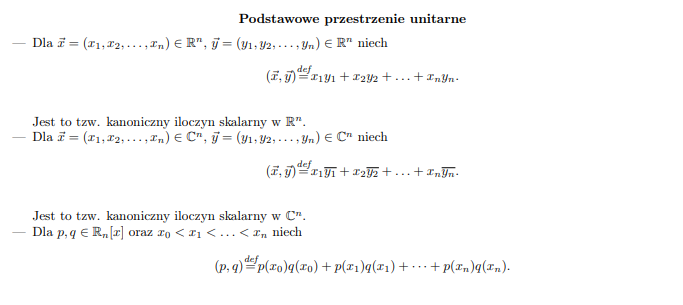
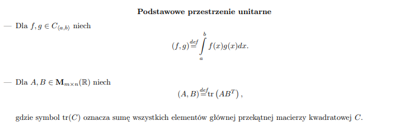
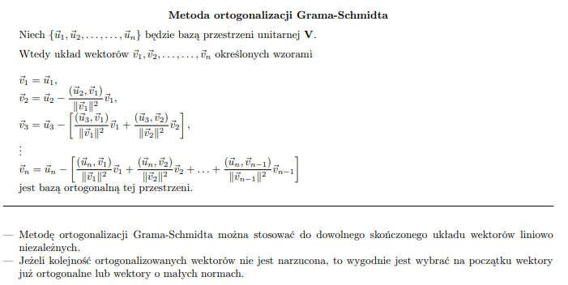
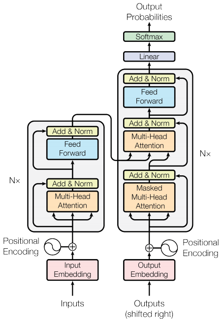
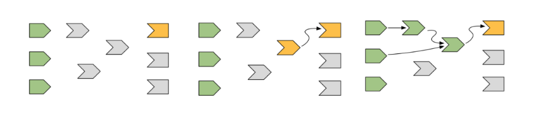
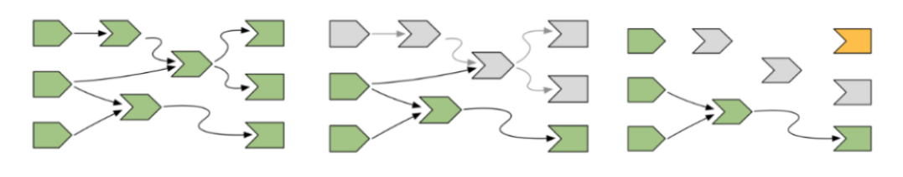
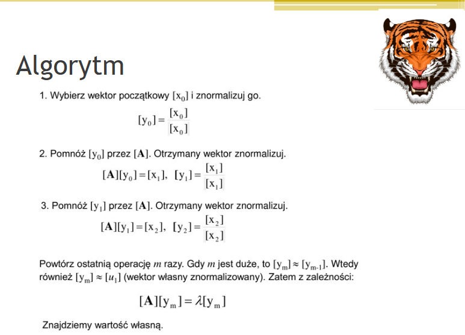
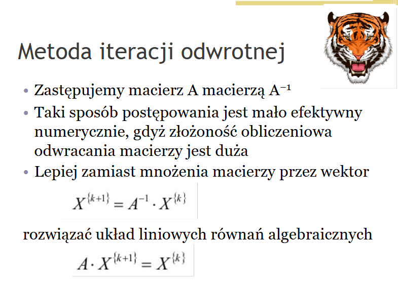
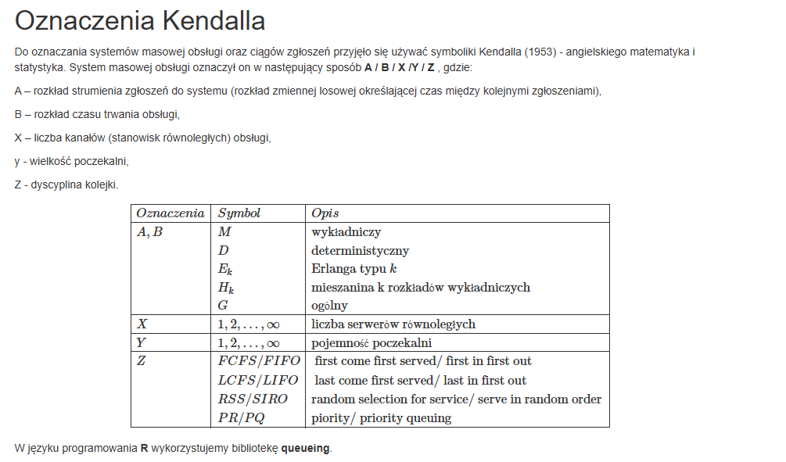
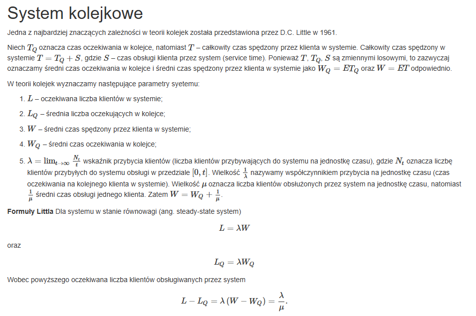

Pytania na egzamin dyplomowy IAD
1. Algebra zaawansowana
1. Definicja, własności i wybrane zastosowania macierzy Jordana.
DEFINICJA (Klatka Jordana)
Macierz \(J_r(\lambda) \in M_r(\mathbb{K})\) postaci: \[ J_r(\lambda) = \begin{pmatrix} \lambda & 1 & 0 & \cdots & 0 \\ 0 & \lambda & 1 & \cdots & 0 \\ \vdots & \vdots & \ddots & \ddots & \vdots \\ 0 & 0 & \cdots & \lambda & 1 \\ 0 & 0 & \cdots & 0 & \lambda \end{pmatrix} \] gdzie \(\lambda \in \mathbb{K}\), nazywamy klatką Jordana stopnia \(r\). W szczególnym przypadku \(J_1(\lambda) = [\lambda]\).
DEFINICJA (Macierz Jordana)
Macierz blokową \(J \in M_n(\mathbb{K})\) postaci: \[ J = \begin{pmatrix} J_{n_1}(\lambda_1) & & & \\ & J_{n_2}(\lambda_2) & & \\ & & \ddots & \\ & & & J_{n_k}(\lambda_k) \end{pmatrix} \] gdzie \(n_1 + n_2 + \dots + n_k = n\), \(\lambda_1, \dots, \lambda_k \in \mathbb{K}\) oraz wszystkie niewypisane elementy są zerami, nazywamy macierzą Jordana.
TWIERDZENIE (Postać Jordana macierzy)
Niech \(A \in M_n(\mathbb{K})\), gdzie \(\mathbb{K} = \mathbb{R}\) lub \(\mathbb{K} = \mathbb{C}\). Wtedy istnieje macierz nieosobliwa \(P \in M_n(\mathbb{K})\) taka, że macierz \(J = P^{-1}AP\) jest macierzą Jordana. Macierz \(J\) nazywamy macierzą Jordana macierzy A. Jest ona wyznaczona jednoznacznie z dokładnością do kolejności klatek Jordana.
Własności Macierzy Jordana
- Wartości własne: Skalary \(\lambda_1, \dots, \lambda_k\) tworzące główną przekątną macierzy Jordana \(J\) są jej wartościami własnymi.
- Związek z diagonalizacją: Każda macierz diagonalna jest macierzą Jordana (z klatkami wymiaru 1x1). Oznacza to, że każda macierz diagonalizowalna jest podobna do pewnej macierzy Jordana.
- Liczba klatek Jordana:
- Liczba wszystkich klatek Jordana w macierzy \(J\) jest równa liczbie liniowo niezależnych wektorów własnych macierzy \(A\).
- Liczba klatek Jordana odpowiadających konkretnej wartości własnej \(\lambda\) jest równa wymiarowi podprzestrzeni własnej \(W_\lambda\) (krotności geometrycznej tej wartości własnej).
- Rozmiar klatek Jordana: Suma stopni (wymiarów) wszystkich klatek Jordana odpowiadających wartości własnej \(\lambda\) jest równa krotności algebraicznej tej wartości własnej (czyli jej krotności jako pierwiastka wielomianu charakterystycznego).
- Wektory dołączone: Struktura macierzy Jordana (liczba i rozmiary klatek) jest ściśle powiązana z istnieniem tzw. wektorów dołączonych. Dla wartości własnej \(\lambda\) o krotności algebraicznej \(r\) istnieje dokładnie \(r\) liniowo niezależnych wektorów dołączonych, które tworzą bazę Jordana.
Wybrane Zastosowania Macierzy Jordana
Głównym zastosowaniem przedstawionym w materiałach jest uproszczenie obliczeń funkcji macierzy.
TWIERDZENIE
Jeżeli \(f\) jest wielomianem o współczynnikach z ciała \(\mathbb{K}\), zaś \(J\) jest macierzą Jordana w postaci blokowej jak w definicji, to zachodzi równość: \[ f(J) = \begin{pmatrix} f(J_{n_1}(\lambda_1)) & & & \\ & f(J_{n_2}(\lambda_2)) & & \\ & & \ddots & \\ & & & f(J_{n_k}(\lambda_k)) \end{pmatrix} \] Obliczenie funkcji dla całej macierzy sprowadza się do obliczenia jej dla poszczególnych klatek Jordana.
TWIERDZENIE (Funkcja klatki Jordana)
Jeżeli \(J_r(\lambda)\) jest klatką Jordana stopnia \(r\), to wartość funkcji \(f(J_r(\lambda))\) można obliczyć za pomocą następującego wzoru, wykorzystującego pochodne funkcji \(f\): \[ f(J_r(\lambda)) = \begin{pmatrix} f(\lambda) & f'(\lambda) & \frac{f''(\lambda)}{2!} & \cdots & \frac{f^{(r-1)}(\lambda)}{(r-1)!} \\ 0 & f(\lambda) & f'(\lambda) & \cdots & \frac{f^{(r-2)}(\lambda)}{(r-2)!} \\ \vdots & \vdots & \ddots & \ddots & \vdots \\ 0 & 0 & \cdots & f(\lambda) & f'(\lambda) \\ 0 & 0 & \cdots & 0 & f(\lambda) \end{pmatrix} \] To zastosowanie jest kluczowe np. przy obliczaniu eksponenty macierzy \(e^{At}\), co jest fundamentalne w rozwiązywaniu układów równań różniczkowych liniowych.
2. Definicja przestrzeni unitarnej i metoda ortogonalizacji Grama-Schmidta.
Definicja: Przestrzeń wektorową, w której wprowadzono iloczyn skalarny nazywamy przestrzenią unitarną.


Metroda ortogonalizacji Grama-Schmidta:

3. Wybrane metody dekompozycji macierzy.
- Rozkład \(LU\)
- Rozkład \(QR\)
- Rozkład \(SVD\)
- Rozkład \(Shura\)
- Rozkłąd \(Choleskiego\)
2. Zaawansowane metody uczenia maszynowego
1. Zasada działania sieci typu Transformer.

Enkoder Dostaje na wejściu dane wejściowe które następnie są konwertowane na tzw. embeddingi (osadzenia) ponieważ dla komputera łatwiej jest interpretować cyfry. Do powstałej reprezentacji dodajemy tzw. positional embedding’s aby mógł interpretować pozycje słów występujących w sekwencji z uwagi na to, że słowa mogą mieć różne znaczenie ze względu na kolejnośc w zdaniu.
Działanie Self-Attention można opisać następująco:
Dla każdego tokenu tworzone są trzy wektory: Query (Q), Key (K) i Value (V).
Query (Q): Reprezentuje zapytanie, czyli to, czego szukamy w innych tokenach.
Key (K): Reprezentuje cechy tokenu, które mogą być istotne dla innych tokenów.
Value (V): Reprezentuje faktyczną wartość lub informację, którą token niesie.
Porównując Query jednego tokenu z Key pozostałych tokenów, obliczana jest waga (stopień „uwagi”), czyli jak bardzo dany token powinien brać pod uwagę inny token.
Wagi te są następnie używane do zsumowania Value tokenów w sposób ważony, co daje nową reprezentację tokenu uwzględniającą kontekst całego zdania.
Ponieważ jeden mechanizm uwagi mógłby koncentrować się tylko na jednym aspekcie relacji między słowami, w transformerze stosuje się Multi-Head Attention – wiele równoległych głów uwagi. Każda z nich może analizować inny typ powiązań (np. składnię, znaczenie, zależności czasowe), a wyniki są łączone w jedną bogatszą reprezentację.
Po bloku uwagi wyniki są przekazywane przez Feed-Forward Network – prostą, w pełni połączoną sieć neuronową, która przetwarza każdy token niezależnie, umożliwiając modelowi tworzenie bardziej złożonych reprezentacji. Każda warstwa transformera zawiera również resztkowe połączenia (residual connections) i normalizację warstw (Layer Normalization), co pozwala na stabilniejsze i szybsze uczenie się głębokiego modelu.
Dekoder
Dekoder odpowiedzialny jest za generowanie sekwencji wyjściowej. Token wyjściowy jest tworzony na podstawie: - wcześniej wygenerowanych tokenów, - reprezentacji wejściowej dostarczonej przez enkoder
- Masked Multi-Head Self Attention
- Dekoder używa mechanizmu samo-uwagi na już wygenerowanych tokenach
- Maskowanie, czyli model nie może “patrzeć w przyszłość”, znaczy to, że uwaga jest ograniczona do aktualnych i wcześniejszych tokenów.
- Dzięki temuu dredykcja kolejnego słowa bazuje tylko na wcześniejszych słowach, a nie na tych które właśnie będą generowane
- Add & Norm
- Warstwy normalizacji oraz reszt
- Multi-Head Cross-Attention
- Dekoder zwraca uwagę na wyjście z enkodera
- Mechanizm polega na tym, że Query(Q) pochodzi z dekodera, a Key(K) i Value(V) z enkodera dzięki temu dekoder szuka odpowiednich fragmentów informacji potrzebnych do wygenerowania kolejnego słowa
- Add & Norm
- Feed-Forward Network (FFN)
- Add & Norm
2. Problem zanikającego i eksplodującego gradientu w modelach rekurencyjnych.
Problemy zanikającegi i eksplodującego gradientu można przedstawić w następujący sposób:
Zanikający gradient: Coraz mniejsze gradienty powodują coraz mniejsze zmniany wag w węzłach głebkiej sieci neuronowej, co porowadzi do niewielkiego lub żadnego uczenia się.
Eksplodujący gradient: Gradienty stają się zaskakująco duże, przez co następują duże aktualizacje wag (powtarzające się mnożenie dużych wag) każdego węzła w głebokiej sieci neuronowej
3. Rozwiązania z zakresu technik głębokiego uczenia dedykowanych do zadań wizji komputerowej.
Konwolucyjne sieci neuronowe (CNN, Convolutional Neural Networks)
Sieci generatywne
- GAN (Geeral Adversarial Networks)
- Variacynjy Auroenkoder (VAE) - probabilistyczne modele generatywne
- Diffusion Models (np. DALLE) - obecnie dominujące
- Transformery w wizji komputerowej
- Vision Transformer (ViT) - dzieli obraz na fragmenty, a następnie traktuje je jak sekwencje tokenów
- Sieci detekcji obiektów
- One-stage detectors:
- Sieci YOLO (You Only Look Once) - szybkie modele które wykrywają obiekty w czasie rzeczywistym
- Two-stage detectors:
- R-CNN, Fast R-CNN - najpierw generują regiony zainteresowanie (RoI), potem klasyfikują
3. Wdrażanie modeli uczenia maszynowego
1. Podstawowe komendy REST API służące do komunikacji.
GET - Pobiera dane z serwera. Nie modyfikuje zasobów.
- Przykład: GET /users — pobierz listę użytkowników.
POST - Tworzy nowy zasób na serwerze. Przykład: POST /users — dodaj nowego użytkownika (dane w body).
PUT - Aktualizuje istniejący zasób w całości (zastępuje go nowym).
- Przykład: PUT /users/123 — nadpisz dane użytkownika o ID 123.
PATCH - Aktualizuje tylko część zasobu.
- Przykład: PATCH /users/123 — zmień np. tylko email użytkownika 123.
DELETE - Usuwa zasób z serwera.
- Przykład: DELETE /users/123 — usuń użytkownika o ID 123.
2. Reaktywność i realizacja w aplikacjach Shiny.
Reaktywność w Shiny to mechanizm, który śledzi zależności między częscią wejściową a wyjściową. Dzięki temu, aplikacja przelicza tylko te elementy, które są od siebie zależne niż wykonywać cały kod od nowa.

Powyższa ilustracja przedstawia etapy reaktywności w Shiny:
- W momencie uruchomienia aplikacji Shiny uruchamia (losowe) wyjście. Ponieważ wywołanie to jest zależne od wyników wywołań reaktywnych, tworzy się połączenia z wyrażeniami reaktywnymi. W tym przypadku pierwsze wywołanie nazwijmy je x.
- Następnie inicjalizowane są wyrażenia reaktywne które są zależne od wyjścia, a następnie kolejno te które są zależne od innych metod aplikacji
- Na sam koniec, wszystkie operacje wymagane do egzekucji wyjścia x zostały policzone a następnie wyświetlone

Powyższa ilustracja przedstawia moment w którym dochodzi do modyfikacji danych wejściowych]
- Wyjście oraz metody, które były zależne do wykonania obliczeń oznacza się jako “invalidated”. Również połączenia z innymi metodami, które bezpośrednio nie miałyby zostać wyświetlone (patrz środkowe wyjście) oraz jednocześnie przypisywana jest nowa wartość dla wejścia (patrz pierwsze wejście od góry).
- W dalszej kolejności znów jedno z wyjść unieważnionych (ang. invalidated) jest poddane egzekucji, która pociąga za sobą egzekucje tych wejść i wyrażeń reaktywnych, które są wymagane do obliczenia wartości lub wyświetlenia wyjścia.
3. Metody optymalizacji wydajności aplikacji Shiny obsługującej duże zbiory danych.
Optymalizacja w Shiny sprowadza się do:
Minimalizacji danych w pamięci (agregacje, filtrowanie, server-side processing).
Rozsądnego użycia reaktywności (tylko to, co trzeba, kiedy trzeba).
Wydzielenia ciężkich obliczeń do backendu lub równoległości (future, API).
Skalowania serwera przy produkcyjnych wdrożeniach.
4. Wybrane problemy teorii niezawodności
1. Rozkłady statystyczne stosowane w analizie niezawodności.
Rozkład wykładniczy (Exponential distribution)
Rozkład Weibulla (Weibull distribution)
Rozkład normalny (Normal / Gaussian distribution)
Rozkład Gamma
Rozkład Rayleigha
Rozkład Bernoulliego / dwumianowy / Poissona
2. Modele szeregowe, równoległe i mieszane obiektów technicznych.
Model szeregowy (ang. series system)
System działa tylko wtedy, gdy działają wszystkie jego elementy.
Awaria jednego elementu powoduje awarię całego systemu.
Model równoległy (ang. parallel system)
System działa, jeżeli działa przynajmniej jeden z elementów.
Awaria następuje dopiero, gdy wszystkie elementy zawiodą.
Model mieszany (ang. mixed system)
Rzeczywiste systemy rzadko są idealnie szeregowe lub równoległe.
Najczęściej są to kombinacje obu typów — niektóre podzespoły muszą działać wszystkie (połączenie szeregowe), a inne mają redundancję (połączenie równoległe).
3. Wskaźniki gotowości systemu - MTBF, MTTR, dostępność eksploatacyjna.
MTBF – Mean Time Between Failures (Średni czas między awariami)
Definicj: Średni czas pracy systemu pomiędzy kolejnymi awariami wymagającymi naprawy.
Interpretacja: Jest to miara niezawodności – im większy MTBF, tym system rzadziej ulega awarii.
MTTR – Mean Time To Repair (Średni czas naprawy)
Definicja: Średni czas potrzebny do przywrócenia systemu do pracy po awarii.
Interpretacja: Jest to miara utrzymywalności (maintainability) – im mniejszy MTTR, tym szybciej system wraca do działania.
Dostępność eksploatacyjna (Availability, A)
- Definicja: Prawdopodobieństwo, że system jest w danym momencie zdolny do wykonania swojej funkcji.
5 Metody numeryczne w zastosowaniach
1. Wartości własne macierzy i sposoby ich wyznaczania.
Metoda potęgowa
Służy do wyznaczenia maksymalnej co do modułu wartości własnej i odpowiadającego jej wektora własnego

Metoda iteracji odwrotnej
Wariant metody potęgowej służący do wyznaczenia wartości własnej macierzy, najbliższej zeru
Podstawą jest twierdzenie, że wartości własne macierzy odwrotnej są odwrotnościami wartości własnych macierzy danej
Sposób postępowania jest podobny do metody zwykłej z zastrzeżeniem dotyczącym kroku potęgowego

Macierz Hessenbergowska (górna)
2. Metody Rungego-Kutty do rozwiązywania równań różniczkowych.
Metoda Rungego-Kutty (RK)
Metody Rungego-Kutty służą do numerycznego rozwiązywania równań różniczkowych postaci \(y' = f(t, y)\) z warunkiem początkowym \(y(t_0) = y_0\). Idea polega na zastąpieniu prostego przybliżenia z metody Eulera (używającej nachylenia tylko na początku kroku) przez ważoną średnią nachyleń obliczonych w kilku punktach wewnątrz kroku czasowego \(h\). Daje to znacznie dokładniejszą aproksymację.
Porównanie metod RK 1., 2. i 4. rzędu
1. Metoda 1. rzędu (RK1) – Metoda Eulera
To najprostsza forma, stanowiąca punkt odniesienia.
- Idea: Ekstrapolacja rozwiązania na podstawie nachylenia w punkcie początkowym kroku.
- Wzór: \[ y_{n+1} = y_n + h \cdot f(t_n, y_n) \]
2. Metoda 2. rzędu (RK2) – np. Metoda Heuna
Znaczne ulepszenie w stosunku do metody Eulera przy niewielkim dodatkowym koszcie.
- Idea: Uśrednienie nachylenia z początku i (oszacowanego) końca kroku.
- Wzór:
- \(k_1 = f(t_n, y_n)\) (nachylenie na początku)
- \(k_2 = f(t_n + h, y_n + h \cdot k_1)\) (nachylenie na końcu, oszacowane metodą Eulera)
- \(y_{n+1} = y_n + h \cdot \frac{k_1 + k_2}{2}\) (użycie średniego nachylenia)
3. Metoda 4. rzędu (RK4) – Klasyczna metoda Rungego-Kutty
Najpopularniejsza metoda, oferująca doskonały kompromis między dokładnością a kosztem obliczeniowym.
- Idea: Obliczenie ważonej średniej nachyleń z początku, dwóch punktów w środku i końca kroku. Wagi są dobrane tak, by zmaksymalizować dokładność.
- Wzór:
- \(k_1 = f(t_n, y_n)\)
- \(k_2 = f(t_n + \frac{h}{2}, y_n + h \frac{k_1}{2})\)
- \(k_3 = f(t_n + \frac{h}{2}, y_n + h \frac{k_2}{2})\)
- \(k_4 = f(t_n + h, y_n + h k_3)\)
- \(y_{n+1} = y_n + \frac{h}{6}(k_1 + 2k_2 + 2k_3 + k_4)\)
Jak wyznaczane są parametry metody?
Parametry (współczynniki wagowe i punkty pośrednie) nie są przypadkowe. Wyznacza się je poprzez porównanie rozwinięcia w szereg Taylora numerycznej formuły metody z rozwinięciem w szereg Taylora dokładnego rozwiązania \(y(t_n+h)\).
Algorytm wyznaczania parametrów:
Zapisz dokładne rozwiązanie w postaci szeregu Taylora wokół punktu \(t_n\) do rzędu \(p\): \(y(t_n+h) = y_n + h \cdot y'(t_n) + \frac{h^2}{2} y''(t_n) + \dots + \frac{h^p}{p!} y^{(p)}(t_n) + O(h^{p+1})\)
Wyraź pochodne \(y', y'', \dots\) za pomocą funkcji \(f(t,y)\) i jej pochodnych cząstkowych (np. \(y' = f\), \(y'' = \frac{\partial f}{\partial t} + \frac{\partial f}{\partial y} f\), itd.).
Rozwiń wzór numeryczny metody RK (z niewiadomymi parametrami) również w szereg Taylora względem potęg kroku \(h\).
Porównaj współczynniki przy tych samych potęgach \(h\) (\(h^1, h^2, \dots, h^p\)) w obu rozwinięciach.
Rozwiąż powstały układ równań (zazwyczaj nieliniowych) na nieznane parametry. Co ciekawe, dla rzędów wyższych niż 1, układ ten ma często więcej niewiadomych niż równań, co prowadzi do istnienia całych rodzin metod RK tego samego rzędu (np. istnieje wiele różnych metod RK2).
Rząd metody a dokładność obliczeń
Rząd metody (\(p\)) jest kluczowym wskaźnikiem jej dokładności. Określa on, jak szybko maleje globalny błąd obliczeń wraz ze zmniejszaniem kroku \(h\). Zależność ta jest następująca:
Globalny błąd \(\approx C \cdot h^p\)
gdzie \(C\) to stała zależna od problemu.
- RK1 (rząd 1): Błąd jest proporcjonalny do \(h\). Dwukrotne zmniejszenie kroku zmniejsza błąd dwukrotnie. Jest to bardzo wolna zbieżność.
- RK2 (rząd 2): Błąd jest proporcjonalny do \(h^2\). Dwukrotne zmniejszenie kroku zmniejsza błąd czterokrotnie.
- RK4 (rząd 4): Błąd jest proporcjonalny do \(h^4\). Dwukrotne zmniejszenie kroku zmniejsza błąd aż szesnastokrotnie!
Wniosek: Metoda RK4 pozwala osiągnąć bardzo wysoką dokładność przy znacznie większym kroku \(h\) w porównaniu do metod niższych rzędów, co czyni ją niezwykle wydajną i popularną w praktycznych zastosowaniach.
3. Generatory liczb pseudolosowych i ich zastosowanie do obliczania całek oznaczonych metodą Monte-Carlo.
Dlaczego generatory liczb pseudolosowych? Ponieważ znając algorytm oraz ziarno generatora jesteśmy w stanie przewidzieć kolejne elementy ciągu - brak w tym losowości
Generatory możemy podzielić na:
- Liniowe
- Linowy generator kongruentny \[ x_{n+1} = (ax_n+b)(\text{mod} m) \]
- Generator Fibbonacciego \[ x_n = (x_{n-l} + n_{n-k})(\text{mod} m) \]
- Nieliniowe
- Charakteryzują się bardzo długim okresem i dobrą równomiernością rozkładu liczb. Oparte na bardziej złożonych zależnościach, np. Mersenne Twister
6. Podstawy teorii sterowania
1. Sposoby tworzenia modeli matematycznych obiektów lub procesów sterowania. Identyfikacja procesu sterowania.
2. Charakterystyka statyczna i charakterystyka dynamiczna procesu. Przykłady obu charakterystyk dla wybranego procesu.
3. Metody ograniczania skutków niepożądanego oddziaływania na proces.
7. Systemy obsługi masowej
1. Korzystając z oznaczenia Kendalla podać charakterystykę systemu M/D/n/m.

Charakterystyka systemu M/D/n/m:
- M - czas przybycia klientów jest rozkładem wykładniczym;
- D - czas trwania obsługi jest opisany rozkładem deterministycznym (stałym);
- n - liczba liczba serwerów równoległych
- m - maksymalna liczba osób w systemie (w kolejce (poczekalni) i w obsłudze).
2. Korzystając z formuł Littla opisz zależność pomiędzy oczekiwaną liczbą klientów w systemie a średnim czasem spędzonym w systemie.

3. Różnice w oszacowaniu własności systemów obsługi ze względu na sposób połączenia serwerów
Analiza systemów kolejkowych wymaga zrozumienia, jak architektura połączeń między serwerami wpływa na kluczowe metryki wydajności, takie jak czas oczekiwania czy wykorzystanie zasobów. Poniżej przedstawiono trzy fundamentalne modele połączeń i metody ich analizy.
- Serwery połączone równolegle z jedną, wspólną kolejką.
- Serwery połączone równolegle z oddzielnymi kolejkami dla każdego serwera.
- Serwery połączone szeregowo (kaskadowo).
1. Serwery Równoległe z Jedną Wspólną Kolejką (Model M/M/c)
Jest to najczęściej spotykany i zazwyczaj najwydajniejszy model obsługi w miejscach takich jak banki (jedna kolejka do wielu okienek), infolinie czy lotniska (jedna kolejka do kontroli bezpieczeństwa).
Opis:
- Klienci (zgłoszenia) wchodzą do jednej, wspólnej kolejki.
- Gdy dowolny z \(c\) serwerów staje się wolny, pierwszy klient z kolejki jest kierowany do jego obsługi.
- System jest opisywany w notacji Kendalla jako M/M/c.
Właściwości i sposób oszacowania:
Wydajność i równoważenie obciążenia: System jest wysoce wydajny. Żaden serwer nie jest bezczynny, jeśli w kolejce czeka choćby jedno zgłoszenie. Obciążenie jest automatycznie i idealnie zrównoważone między wszystkimi serwerami.
Złożoność analizy: Analiza matematyczna jest bardziej złożona niż dla pojedynczego serwera. Wykorzystuje się wzory Erlanga-C, które pozwalają obliczyć kluczowe metryki:
- Prawdopodobieństwo, że system jest pusty (\(P_0\)): Wymaga obliczenia sumy szeregu.
- Prawdopodobieństwo oczekiwania w kolejce (\(P_w\)): Znane jako wzór C Erlanga, zależy od \(P_0\), liczby serwerów \(c\) i współczynnika wykorzystania systemu \(\rho\).
- Średnia liczba klientów w kolejce (\(L_q\)): \(L_q = P_w \cdot \frac{\rho}{1 - \rho}\)
- Średni czas oczekiwania w kolejce (\(W_q\)): \(W_q = L_q / \lambda\) (gdzie \(\lambda\) to średnie natężenie zgłoszeń).
- Średni czas pobytu w systemie (\(W\)): \(W = W_q + 1/\mu\) (gdzie \(\mu\) to średnie tempo obsługi jednego serwera).
Kluczowa metryka: Współczynnik wykorzystania systemu \(\rho = \lambda / (c \cdot \mu)\). Warunkiem stabilności systemu jest \(\rho < 1\).
Podsumowując: Ten model minimalizuje średni czas oczekiwania klienta, ponieważ zasoby (serwery) są wykorzystywane w sposób optymalny.
2. Serwery Równoległe z Oddzielnymi Kolejkami (Model \(c \times\) M/M/1)
Ten model jest typowy dla supermarketów z wieloma kasami, gdzie każda kasa ma swoją własną kolejkę.
Opis:
- Istnieje \(c\) niezależnych kolejek, po jednej dla każdego z \(c\) serwerów.
- Klient po przybyciu wybiera jedną z kolejek (np. najkrótszą) i pozostaje w niej.
Właściwości i sposób oszacowania:
Wydajność i równoważenie obciążenia: System ten jest z natury mniej wydajny niż system z jedną kolejką. Może wystąpić sytuacja, w której jeden serwer jest bezczynny (jego kolejka jest pusta), podczas gdy w innych kolejkach klienci oczekują na obsługę. Równoważenie obciążenia jest niedoskonałe i zależy od decyzji klientów.
Złożoność analizy: Analiza jest znacznie prostsza, ponieważ system można traktować jako
$c$niezależnych systemów M/M/1.- Zakładając, że strumień wejściowy \(\lambda\) jest równomiernie rozłożony na \(c\) kolejek, każda z nich otrzymuje strumień zgłoszeń o natężeniu \(\lambda_i = \lambda / c\).
- Dla każdej z tych kolejek stosuje się proste wzory dla systemu M/M/1:
- Współczynnik wykorzystania pojedynczego serwera: \(\rho_i = \lambda_i / \mu = (\lambda / c) / \mu = \rho\).
- Średnia liczba klientów w i-tej kolejce: \(L_{q_i} = \frac{\rho_i^2}{1 - \rho_i}\).
- Średni czas oczekiwania w i-tej kolejce: \(W_{q_i} = L_{q_i} / \lambda_i\).
- Całkowite właściwości systemu uzyskuje się poprzez uśrednienie wyników z poszczególnych kolejek.
Zjawisko “Jockeying”: W praktyce klienci mogą zmieniać kolejki, jeśli widzą, że inna porusza się szybciej. To zjawisko komplikuje analizę i zbliża właściwości systemu do modelu z jedną wspólną kolejką, ale rzadko jest uwzględniane w podstawowych modelach analitycznych.
Podsumowując: Choć prostszy w analizie, ten model prowadzi do dłuższego średniego czasu oczekiwania i mniejszej efektywności wykorzystania serwerów w porównaniu do modelu ze wspólną kolejką.
3. Serwery Połączone Szeregowo (Systemy Tandemowe)
Model ten opisuje procesy wieloetapowe, takie jak linia produkcyjna, proces składania zamówienia w restauracji (zamówienie -> płatność -> odbiór) czy przetwarzanie danych w potoku.
Opis:
- System składa się z sekwencji serwerów (stacji).
- Wyjście z jednego serwera staje się wejściem do kolejnego.
- Między serwerami mogą znajdować się bufory (kolejki) o skończonej lub nieskończonej pojemności.
Właściwości i sposób oszacowania:
- Złożoność analizy: Sposób oszacowania silnie zależy od założeń dotyczących buforów i rozkładów czasów obsługi.
- Przypadek prosty (Twierdzenie Burke’a): Jeśli każdy etap to system M/M/1 z nieskończonym buforem, to wyjściowy strumień zgłoszeń z każdego etapu jest również procesem Poissona o tym samym natężeniu
$\lambda$. Dzięki temu cały system można analizować jako serię niezależnych systemów M/M/1.- Średni czas pobytu w całym systemie (\(W_{\text{total}}\)) jest po prostu sumą średnich czasów pobytu na każdym etapie: \(W_{\text{total}} = W_1 + W_2 + \dots + W_c\).
- Średnia liczba klientów w systemie (\(L_{\text{total}}\)) to suma średnich liczb klientów na każdym etapie: \(L_{\text{total}} = L_1 + L_2 + \dots + L_c\).
- Przypadek złożony (Skończone bufory): Jest to sytuacja znacznie bardziej realistyczna i trudniejsza analitycznie.
- Zjawisko blokowania: Jeśli bufor między serwerem
$i$a$i+1$jest pełny, serwer$i$po zakończeniu obsługi musi czekać (jest blokowany), aż zwolni się miejsce w buforze. To drastycznie obniża przepustowość całego systemu. - Wąskie gardło (Bottleneck): Przepustowość całego systemu jest ograniczona przez najwolniejszy etap (serwer o najniższym tempie obsługi
$\mu$). Ten etap nazywany jest “wąskim gardłem”. - Metody analizy: Dokładne rozwiązania analityczne są rzadkie. Do oszacowania właściwości takich systemów najczęściej wykorzystuje się symulacje komputerowe lub metody aproksymacyjne.
- Zjawisko blokowania: Jeśli bufor między serwerem
- Przypadek prosty (Twierdzenie Burke’a): Jeśli każdy etap to system M/M/1 z nieskończonym buforem, to wyjściowy strumień zgłoszeń z każdego etapu jest również procesem Poissona o tym samym natężeniu
Podsumowując: Kluczowe dla analizy systemów szeregowych jest zjawisko blokowania i identyfikacja wąskiego gardła. Wydajność całego łańcucha jest determinowana przez jego najsłabsze ogniwo.
Tabela Porównawcza
| Cecha | System Równoległy - Jedna Kolejka (M/M/c) | System Równoległy - Oddzielne Kolejki (c x M/M/1) | System Szeregowy (Tandem) |
|---|---|---|---|
| Opis | Jedna kolejka do wielu serwerów | Wiele kolejek, po jednej na serwer | Sekwencja serwerów, jeden po drugim |
| Wydajność | Najwyższa | Niższa (ryzyko bezczynności serwerów) | Ograniczona przez “wąskie gardło” |
| Równoważenie obciążenia | Idealne, automatyczne | Niedoskonałe, zależne od wyboru klienta | Nie dotyczy (każde zadanie przechodzi przez każdy serwer) |
| Złożoność Analizy | Umiarkowana (wzory Erlanga-C) | Niska (analiza niezależnych systemów M/M/1) | Bardzo wysoka (zwłaszcza przy skończonych buforach) |
| Kluczowe Zjawisko | Efektywność współdzielenia zasobów | Niewydajność i możliwość “jockeyingu” | Blokowanie i “wąskie gardło” |
| Typowy Przykład | Obsługa w banku, infolinia | Kasy w supermarkecie | Linia produkcyjna, myjnia samochodowa |
8. Multimedialne metody opracowywania danych
1. Mechanizm działania algorytmu najczęściej używanego do kompresji wideo.
2. Pojęcie „przetwarzania obrazów cyfrowych”. Zasady postępowania.
- Pozyskanie (akwizycja) obrazu i przetworzenie do postaci cyfrowej;
- Wstępne przetworzenie obrazu, jego filtracja i wyostrzanie, a także jego binaryzacja;
- Segmentacja obrazu i wydzielenie poszczególnych obiektów oraz ich fragmentów (np. krawędzi i innych linii);
- Analiza obrazu i wyznaczenie cech obiektów oraz informacji o ich lokalizacji;
- Rozpoznanie i rozumienie obrazu (identyfikacja klasy).
3. Formaty plików obrazów bez kompresji stratnej i ich charakterystyka.
- PNG (Portable Network Graphics):
- Lepsza kompresja niż BMP/TIFF przy zachowaniu jakości,
- Obsługa przezroczystości (kanał alfa).
- GIF
- Obsługuje animacje,
- Ograniczona paleta kolorów - 256 kolorów (8 bitów),
- TIFF (Tagged Image File Format):
- Wysoka jakość obrazu,
- Obsługuje różne metody kompresji, w tym bezstratną (LZW) i stratną (JPEG).
- Obsługuje bardzo wysoką jakość obrazu i głębię bitową (np. 16 bitów na kanał).
- Obsługuje warstwy, kanały alfa i metadane.
- BMP (Bitmap, Windows Bitmap):
- Prosty format bez kompresji,
- Duże rozmiary plików,
- Obsługuje różne głębie kolorów (1, 4, 8, 16, 24, 32 bity).
9. Zaawansowane metody probabilistyczne
1. Proces Poissona – definicja, konstrukcja i zastosowania.
Rodzinę mierzalnych zmiennych losowych \(\{Z_t, t \geq 0\}\) określonych na przestrzeni probabilistycznej \((\Omega, \mathcal{F}, \mathbb{P})\) nazywamy procesem Poissona o intensywności \(\alpha > 0\), gdy spełnione są warunki:
\(\mathbb{P}[Z_0 = 0] = 1\)
Dla dowolnego układu \(0 \leq t_0 < t_1 < \dots < t_n\) zmienne losowe
\[ Z_{t_1} - Z_{t_0},\; Z_{t_2} - Z_{t_1},\; \dots,\; Z_{t_n} - Z_{t_{n-1}} \]
są stochastycznie niezależne.
Dla dowolnych \(0 \leq s < t\) zmienna losowa \(Z_t - Z_s\) ma rozkład Poissona z parametrem \(\alpha (t-s)\), tzn.
\[ \mathbb{P}[Z_t - Z_s = i] \;=\; \frac{(\alpha (t-s))^i}{i!} e^{-\alpha (t-s)}, \quad i = 0,1,2,\dots \]
2.Proces urodzin i śmierci – definicja i przykłady zastosowania.
Proces stochastyczny \(\{Z_t, t \geq 0\}\) o wartościach w \(\mathbb{N}_0\) nazywamy procesem urodzin i śmierci, jeżeli:
- jest łańcuchem Markowa,
- istnieją stałe dodatnie \(\{\lambda_n\}_{n \geq 0}\) (intensywności urodzin) oraz \(\{\mu_n\}_{n \geq 1}\) (intensywności śmierci), dla których spełnione są równania:
\[ \begin{aligned} P_{n,n+1}'(t) &= \lambda_n P_{n}(t), \\ P_{n,n}'(t) &= -(\lambda_n + \mu_n) P_{n}(t), \\ P_{n,n-1}'(t) &= \mu_n P_{n}(t), \end{aligned} \]
gdzie \(P_n(t) = \Pr(Z_t = n)\).
Macierz intensywności
Macierz \(Q = (q_{ij})\) nazywamy macierzą intensywności procesu urodzin i śmierci (lub generatorem procesów Markowa w czasie ciągłym). Ma ona postać:
\[ Q = \begin{bmatrix} -\lambda_0 & \lambda_0 & 0 & 0 & 0 & \cdots \\ \mu_1 & -(\mu_1 + \lambda_1) & \lambda_1 & 0 & 0 & \cdots \\ 0 & \mu_2 & -(\mu_2 + \lambda_2) & \lambda_2 & 0 & \cdots \\ 0 & 0 & \mu_3 & -(\mu_3 + \lambda_3) & \lambda_3 & \cdots \\ \vdots & \vdots & \vdots & \vdots & \vdots & \ddots \end{bmatrix} \]
Oznaczenia
- \(\lambda_n\) – intensywność urodzin w stanie \(n\),
- \(\mu_n\) – intensywność śmierci w stanie \(n\).
Zastosowania:
problemy czasu oczekiwania,
problemy związane z liniami telefonicznymi,
proces obsługi klientów,
proces odnowy.
3. Twierdzenie ergodyczne i przykłady jego zastosowania.
Twierdzenie o ergodyczności łańcucha Markowa
Jednorodny łańcuch Markowa \(\{Z_n, n \in \mathbb{N}_0\}\) jest ergodyczny,
jeśli dla każdego \(j \in S\) istnieją i nie zależą od \(i \in S\) granice:
\[ q_j = \lim_{n \to \infty} p_{ij}^{(n)} > 0, \]
oraz
\[ \sum_{j \in S} q_j = 1. \]
Rozkład graniczny
Definicja:
Wektor \(q = (q_j, \, j \in S)\) nazywamy rozkładem ergodycznym.
Twierdzenie
Jeśli łańcuch Markowa \(\{Z_n, n \in \mathbb{N}_0\}\) jest ergodyczny,
to macierz przejścia w \(n\)-tym kroku spełnia:
\[ P^{(n)} \xrightarrow[n \to \infty]{} \begin{bmatrix} q_1 & q_2 & q_3 & \cdots \\ q_1 & q_2 & q_3 & \cdots \\ q_1 & q_2 & q_3 & \cdots \\ \vdots & \vdots & \vdots & \ddots \end{bmatrix} \]
czyli każdy wiersz macierzy granicznej jest identyczny i równy rozkładowi ergodycznemu \(q\).
Uwaga
- Wektor \(q\) jest jedynym rozkładem stacjonarnym łańcucha.
- Rozkład graniczny opisuje zachowanie procesu w nieskończoności, niezależnie od stanu początkowego.
10. Stochastyczne równania różniczkowe
1. Całki stochastyczne: ich rodzaje i definicje.
2. Różniczka stochastyczna Itô, wzór Itô.
11. Podstawy analizy danych finansowych
1. Nominalna i efektywna stopa procentowa oraz twierdzenie charakteryzujące relacje między nimi.
Oczywiście, wyjaśnijmy te fundamentalne pojęcia analizy finansowej w prosty i zrozumiały sposób.
Wprowadzenie
W świecie finansów rzadko kiedy sprawy są tak proste, jak się na pierwszy rzut oka wydaje. Dotyczy to zwłaszcza oprocentowania. Kiedy bank reklamuje lokatę lub kredyt, podaje tzw. nominalną stopę procentową. Jednak to, ile faktycznie zarobisz lub zapłacisz, zależy od efektywnej stopy procentowej. Zrozumienie różnicy między nimi jest kluczowe do podejmowania świadomych decyzji finansowych.
1. Nominalna Stopa Procentowa (r_nom)
Nominalna stopa procentowa, często oznaczana jako stopa nominalna w skali roku (np. 8% p.a. - per annum), to podstawowa, “reklamowana” wartość oprocentowania.
Kluczowe cechy:
- Jest to stopa deklarowana: Służy jako punkt wyjścia do obliczeń.
- Nie uwzględnia częstotliwości kapitalizacji: Sama w sobie nie mówi, jak często odsetki są doliczane do kapitału. Dlatego informacja o stopie nominalnej jest niekompletna bez podania okresu kapitalizacji (np. roczna, kwartalna, miesięczna).
- Jest użyteczna do prostych obliczeń: Jeśli kapitalizacja jest roczna, to stopa nominalna jest równa stopie efektywnej.
Analogia: Pomyśl o niej jak o cenie na metce produktu, która nie uwzględnia ewentualnych dodatkowych opłat czy podatków. To cena wyjściowa, a nie ostateczny koszt.
Przykład: Bank oferuje lokatę na 10% w skali roku. To jest właśnie nominalna stopa procentowa.
2. Efektywna Stopa Procentowa (r_eff)
Efektywna stopa procentowa to rzeczywista stopa zwrotu z inwestycji lub realny koszt kredytu po uwzględnieniu efektu procentu składanego (czyli doliczania odsetek do kapitału w ciągu roku).
Kluczowe cechy:
- Odzwierciedla realny zysk/koszt: Uwzględnia, że odsetki naliczone w jednym okresie (np. w jednym miesiącu) same zaczynają zarabiać w kolejnych okresach.
- Jest narzędziem do porównywania ofert: To jedyny miarodajny wskaźnik, który pozwala porównać różne produkty finansowe, nawet jeśli mają różną nominalną stopę procentową i różną częstotliwość kapitalizacji.
- Jest zawsze równa lub wyższa od stopy nominalnej (przy kapitalizacji rocznej są równe; im częstsza kapitalizacja, tym większa różnica).
Analogia: Wracając do poprzedniej analogii, efektywna stopa procentowa to ostateczna, całkowita cena, którą płacisz za produkt po doliczeniu wszystkich dodatkowych kosztów.
Przykład: Masz 1000 zł na lokacie z nominalnym oprocentowaniem 12% w skali roku.
Scenariusz A: Kapitalizacja roczna Po roku otrzymasz: 1000 zł * 12% = 120 zł odsetek. Stan konta: 1120 zł. Efektywna stopa procentowa = 12%.
Scenariusz B: Kapitalizacja kwartalna Nominalna stopa 12% rocznie oznacza 12% / 4 = 3% na kwartał.
- Po I kwartale: 1000 zł * 1,03 = 1030 zł
- Po II kwartale: 1030 zł * 1,03 = 1060,90 zł (odsetki naliczone od 1030 zł, a nie 1000 zł!)
- Po III kwartale: 1060,90 zł * 1,03 = 1092,73 zł
- Po IV kwartale: 1092,73 zł * 1,03 ≈ 1125,51 zł
Całkowity zysk to 125,51 zł. Efektywna stopa procentowa = (125,51 zł / 1000 zł) * 100% = 12,55%.
Jak widać, mimo tej samej stopy nominalnej (12%), częstsza kapitalizacja sprawiła, że realny zysk był wyższy.
3. Twierdzenie Charakteryzujące Relacje Między Nimi (Wzór)
Relację między nominalną a efektywną stopą procentową opisuje precyzyjny wzór matematyczny.
Wzór:
%5Em%20-%201.png)
- Gdzie:
- r_eff – efektywna roczna stopa procentowa (ang. Effective Interest Rate)
- r_nom – nominalna roczna stopa procentowa (ang. Nominal Interest Rate)
- m – liczba okresów kapitalizacji w ciągu roku
- Wartości
mdla różnych okresów kapitalizacji:- Roczna:
m = 1 - Półroczna:
m = 2 - Kwartalna:
m = 4 - Miesięczna:
m = 12 - Tygodniowa:
m = 52 - Dzienna:
m = 365
- Roczna:
Zastosowanie wzoru na poprzednim przykładzie: Dane: * r_nom = 12% = 0,12 * m = 4 (kapitalizacja kwartalna)
Obliczenia: - r_eff = (1 + 0,12 / 4)^4 - 1 - r_eff = (1 + 0,03)^4 - 1 - r_eff = (1,03)^4 - 1 - r_eff ≈ 1,1255088 - 1 - r_eff ≈ 0,1255 - r_eff ≈ 12,55%
Wynik jest identyczny z tym, który uzyskaliśmy, licząc “krok po kroku”.
Podsumowanie i Praktyczne Zastosowanie
| Cecha | Nominalna Stopa Procentowa | Efektywna Stopa Procentowa |
|---|---|---|
| Definicja | Deklarowana, “reklamowa” stopa roczna. | Rzeczywista stopa zwrotu lub kosztu. |
| Co uwzględnia? | Tylko wartość bazową oprocentowania. | Wartość bazową oraz efekt procentu składanego. |
| Kiedy używać? | Jako punkt wyjścia do obliczeń. | Do porównywania różnych ofert finansowych. |
| Relacja | r_nom ≤ r_eff |
r_eff ≥ r_nom |
Złota zasada: Zawsze, gdy porównujesz dwie lokaty lub dwa kredyty, patrz na efektywną stopę procentową (lub jej odpowiednik, np. RRSO – Rzeczywistą Roczną Stopę Oprocentowania w przypadku kredytów). Tylko ona powie Ci, która oferta jest naprawdę korzystniejsza.
Przykład: * Kredyt A: 10% nominalnie, kapitalizacja miesięczna. * Kredyt B: 10,1% nominalnie, kapitalizacja półroczna.
Na pierwszy rzut oka Kredyt A wydaje się tańszy. Obliczmy efektywne stopy: * Kredyt A (r_eff): (1 + 0,10 / 12)¹² - 1 ≈ 10,47% * Kredyt B (r_eff): (1 + 0,101 / 2)² - 1 ≈ 10,36%
Okazuje się, że Kredyt B, mimo wyższej stopy nominalnej, jest w rzeczywistości tańszy, ponieważ odsetki są doliczane rzadziej.
2. Pojęcie renty oraz główne rodzaje rent – ich wartości obecne, wartości przyszłe i przykłady zastosowań.
Renty
Renta to ciąg płatności (rat) dokonywanych w równych odstępach czasu.
- Renta odroczona (płatna z dołu)
\[ PV = R \cdot \frac{1 - (1+i)^{-n}}{i}, \qquad FV = R \cdot \frac{(1+i)^n - 1}{i} \]
- Renta płatna z góry
\[ PV = R \cdot \frac{1 - (1+i)^{-n}}{i} \cdot (1+i), \qquad FV = R \cdot \frac{(1+i)^n - 1}{i} \cdot (1+i) \]
- Renta o ratach tworzących ciąg arytmetyczny
\[ R_k = R_1 + (k-1)d \]
\[ PV = \sum_{k=1}^{n} \frac{R_1 + (k-1)d}{(1+i)^k}, \qquad FV = \sum_{k=1}^{n} (R_1 + (k-1)d) \cdot (1+i)^{\,n-k} \]
- Renta o ratach tworzących ciąg geometryczny
\[ R_k = R_1 \cdot q^{k-1} \]
\[ PV = \sum_{k=1}^{n} \frac{R_1 \cdot q^{k-1}}{(1+i)^k}, \qquad FV = \sum_{k=1}^{n} R_1 \cdot q^{k-1} \cdot (1+i)^{\,n-k} \]
- Renty ciągłe
\[ PV = \int_{0}^{n} R \cdot e^{-i t} \, dt = \frac{R}{i} \left(1 - e^{-i n}\right) \]
\[ FV = \int_{0}^{n} R \cdot e^{i (n-t)} \, dt = \frac{R}{i} \left(e^{i n} - 1\right) \]
3. Procesy akumulacji i dyskontowania oraz ich rodzaje.
| Proces | Rodzaj | Wzór matematyczny |
|---|---|---|
| Akumulacja | Prosta | \(K(t)= K \cdot (1 + i \cdot t)\) |
| Złożona | \(K(t) = K \cdot (1+i)^t\) | |
| Ciągła | \(K(t) = K \cdot e^{i \cdot t}\) | |
| Dyskontowanie | Proste | \(PV = \frac{FV}{1 + i \cdot t}\) |
| Złożone | \(PV = \frac{FV}{(1+i)^t}\) | |
| Ciągłe | \(PV = FV \cdot e^{-i \cdot t}\) |
- Akumulacja:
- Prosta: Opiera się na idei ciągu arytmetycznego. Odsetki dopisujemy po upływie okresu bazowego. Każdy okres daje nam taką samą wartość odsetek.
- Złożona: opiera się na idei ciągu geometrycznego – odsetki są doliczane do kapitału i w kolejnych okresach również pracują, dlatego kapitał rośnie szybciej niż w przypadku odsetek prostych.
- Ciągła: zakładamy, że kapitalizacja następuje w nieskończenie wielu małych krokach, co prowadzi do użycia funkcji wykładniczej. To model najbardziej “teoretyczny”, ale użyteczny np. w analizach rynkowych.
- Dyskontowanie: proces odwrotny do akumulacji (liczymy wartość bieżącą z wartości przyszłej).
- Proste: zakładamy, że odsetki są odejmowane liniowo (tak jak w akumulacji prostej). Każdy kolejny okres obniża wartość przyszłą o taką samą “porcję” czasu
- Złożone: tu również działa mechanizm kapitalizacji odsetek składanych, tylko w odwrotną stronę – sprowadzamy przyszłą wartość poprzez dzielenie przez kolejne potęgi czynnika \((1+i)\).
- Ciągłe: To podejście często używane w finansach matematycznych (np. przy wycenie obligacji i instrumentów pochodnych).
12. Inżynieria ubezpieczeń majątkowych
1. Modele ryzyka stosowane w ubezpieczeniach majątkowych
W teorii ubezpieczeń majątkowych do opisu i kwantyfikacji ryzyka portfela stosuje się dwa fundamentalne modele: model ryzyka indywidualnego oraz model ryzyka łącznego (kolektywnego).
Model Ryzyka Indywidualnego
Model ten koncentruje się na pojedynczych polisach w portfelu. Całkowita strata portfela (\(S\)) jest modelowana jako suma strat (\(X_i\)) z poszczególnych, niezależnych ryzyk (polis).
- Definicja: \[S = X_1 + X_2 + \dots + X_n\] gdzie:
- \(n\) jest ustaloną (nielosową) liczbą ryzyk w portfelu.
- \(X_i\) to zmienna losowa opisująca wysokość szkody z \(i\)-tej polisy.
- Założenia:
- Ryzyka (zmienne losowe \(X_i\)) są statystycznie niezależne.
- W okresie ubezpieczenia dla każdego ryzyka szkoda może wystąpić co najwyżej raz.
- Zastosowanie: Model ten jest użyteczny do analizy jednorodnych portfeli. Jednak ze względu na złożoność obliczeniową (wymaga tzw. splotów rozkładów prawdopodobieństwa) jest mniej praktyczny dla dużych i zróżnicowanych portfeli ubezpieczeń majątkowych.
Model Ryzyka Łącznego (Kolektywnego)
Model ten traktuje portfel jako całość – jako proces, który w danym okresie generuje pewną liczbę szkód o różnej wysokości. Zamiast sumować straty po polisach, modeluje się zagregowaną (łączną) wartość szkód.
- Definicja: \[X = Y_1 + Y_2 + \dots + Y_N\] gdzie:
- \(N\) jest zmienną losową oznaczającą łączną liczbę szkód w portfelu.
- \(Y_i\) to zmienna losowa opisująca wysokość \(i\)-tej szkody.
- Gdy \(N=0\), wtedy \(X=0\).
- Założenia:
- Proces generujący liczbę szkód (\(N\)) jest niezależny od wysokości poszczególnych szkód (\(Y_i\)).
- Wysokości szkód (\(Y_i\)) są zmiennymi losowymi o identycznym rozkładzie i są wzajemnie niezależne.
- Zastosowanie: Jest to dominujący model w ubezpieczeniach majątkowych. Jego siła polega na rozdzieleniu ryzyka na dwa kluczowe komponenty:
- Częstotliwość szkód (modelowana przez rozkład zmiennej \(N\)).
- Wysokość (dotkliwość) szkód (modelowana przez rozkład zmiennej \(Y\)). Rozkład łącznej wartości szkód \(X\) nazywany jest rozkładem złożonym.
2. Podstawowe rozkłady liczby szkód w modelu ryzyka łącznego
W modelu ryzyka łącznego kluczowym elementem jest właściwe zamodelowanie losowej liczby szkód (\(N\)). W praktyce aktuarialnej stosuje się głównie trzy poniższe rozkłady.
Rozkład Poissona
Jest to najczęściej stosowany i fundamentalny rozkład dla liczby szkód.
- Charakterystyka: Modeluje liczbę zdarzeń (szkód) zachodzących losowo i niezależnie w ustalonym przedziale czasu, przy stałej średniej intensywności (\(\lambda\)).
- Wzór: \[P(N = k) = \frac{\lambda^k}{k!} e^{-\lambda}, \quad k=0, 1, 2, \dots\]
- Własności w ubezpieczeniach:
- Równość wartości oczekiwanej i wariancji: \(E(N) = \text{Var}(N) = \lambda\).
- Własność agregacji: Suma niezależnych zmiennych losowych o rozkładach Poissona również ma rozkład Poissona. Ułatwia to łączenie subportfeli.
Rozkład ujemny dwumianowy
Jest to uogólnienie rozkładu Poissona, które oferuje większą elastyczność.
- Charakterystyka: Stosowany, gdy wariancja liczby szkód jest większa niż jej wartość oczekiwana (zjawisko naddyspersji). Jest to częsta sytuacja w praktyce, gdy ryzyko w portfelu nie jest w pełni jednorodne.
- Własności w ubezpieczeniach:
- Wariancja większa od wartości oczekiwanej: \(\text{Var}(N) > E(N)\).
- Lepiej dopasowuje się do danych, gdzie szkody występują w sposób bardziej skumulowany lub nieregularny niż w modelu Poissona.
Rozkład dwumianowy
Stosowany w bardziej specyficznych sytuacjach, gdy liczba potencjalnych szkód jest z góry ograniczona.
- Charakterystyka: Opisuje liczbę szkód w stałej liczbie \(n\) niezależnych polis, gdzie prawdopodobieństwo szkody \(q\) jest takie samo dla każdej polisy.
- Wzór: \[P(N = k) = \binom{n}{k} q^k (1-q)^{n-k}, \quad k=0, 1, \dots, n\]
- Własności w ubezpieczeniach:
- Wariancja mniejsza od wartości oczekiwanej: \(\text{Var}(N) < E(N)\).
- Stosuje się go głównie w zamkniętych, jednorodnych portfelach o znanej liczbie ryzyk.
Wybór rozkładu zależy od charakterystyki portfela. Rozkład Poissona jest punktem wyjścia, rozkład ujemny dwumianowy jego elastycznym rozszerzeniem dla danych o dużej zmienności, a rozkład dwumianowy ma zastosowanie w specyficznych, ograniczonych przypadkach.
3. Funkcja generująca momenty i funkcja generująca kumulanty oraz ich zastosowanie
Funkcja generująca momenty (FGM) i funkcja generująca kumulanty (FGK) to potężne narzędzia matematyczne, które znacząco upraszczają analizę ryzyka w portfelu.
Definicje
Funkcja Generująca Momenty (FGM): Dla zmiennej losowej \(X\), jej FGM jest zdefiniowana jako: \[M_X(t) = E(e^{tX})\] Jej \(k\)-ta pochodna w punkcie \(t=0\) jest równa \(k\)-temu momentowi zwykłemu (\(E(X^k)\)).
Funkcja Generująca Kumulanty (FGK): Jest zdefiniowana jako logarytm naturalny z FGM: \[C_X(t) = \ln(M_X(t))\] Jej \(k\)-ta pochodna w \(t=0\) jest równa \(k\)-tej kumulancie (\(c_k\)), która jest powiązana z momentami centralnymi (np. \(c_1 = \mu\), \(c_2 = \sigma^2\)).
Zastosowanie w teorii ubezpieczeń
Uproszczenie analizy sumy ryzyk: Analiza rozkładu sumy niezależnych ryzyk \(S = X_1 + \dots + X_n\) za pomocą standardowych metod (splotów) jest bardzo skomplikowana. FGM i FGK zamieniają tę operację na proste działania algebraiczne:
- FGM sumy to iloczyn FGM składników: \(M_S(t) = \prod_{i=1}^n M_{X_i}(t)\)
- FGK sumy to suma FGK składników: \(C_S(t) = \sum_{i=1}^n C_{X_i}(t)\)
Kluczowa własnośćAddytywność kumulant jest niezwykle użyteczna. Pozwala obliczyć np. wariancję całego portfela poprzez proste zsumowanie wariancji poszczególnych, niezależnych ryzyk.
Analiza modelu ryzyka łącznego (rozkładu złożonego): To jedno z najważniejszych zastosowań. Dla modelu łącznego, gdzie \(X = Y_1 + \dots + Y_N\), zachodzi fundamentalna zależność: \[C_X(t) = C_N(C_Y(t))\] Wzór ten pozwala w elegancki sposób wyprowadzić momenty całego portfela, znając jedynie charakterystyki rozkładu liczby i wysokości szkód. Z tej zależności wynikają m.in. kluczowe wzory: \[E(X) = E(N) \cdot E(Y)\] \[\text{Var}(X) = \text{Var}(N) \cdot [E(Y)]^2 + E(N) \cdot \text{Var}(Y)\]
Charakterystyka i aproksymacja rozkładów: Momenty i kumulanty, obliczone za pomocą FGM i FGK, dostarczają kluczowych informacji o kształcie rozkładu łącznej straty (np. o jego symetrii i “grubości ogonów”). Informacje te są niezbędne do:
- Kalkulacji składki ryzyka i kapitału wymaganego.
- Wyboru odpowiedniej metody aproksymacji rozkładu łącznej straty (np. aproksymacji normalnej lub przesuniętym rozkładem gamma).
13. Inżynieria ubezpieczeń życiowych
1. Tablice trwania życia i ich zastosowanie w ubezpieczeniach życiowych.
Tablice trwania życia (ang. life tables) to fundamentalne narzędzie statystyczne i demograficzne, które w formie tabelarycznej przedstawia proces wymierania hipotetycznej grupy osób (tzw. kohorty - grupa badawcza która ze względu na jej właściwość jest poddawana analizie) od momentu urodzenia aż do śmierci ostatniego jej członka. Są one tworzone na podstawie historycznych danych o śmiertelności w danej populacji (np. dla danego kraju, płci i rocznika).
Zastosowanie w ubezpieczeniach życiowych:
Na podstawie tablic trwania życia obliczane są wartości aktuarialne w ubezpieczeniach na życie. Generalne zastosowania:
- Ocena Ryzyka: Ubezpieczyciel musi oszacować ryzyko, że będzie musiał wypłacić świadczenie. Prawdopodobieństwo zgonu (\(q_x\)) jest bezpośrednią miarą tego ryzyka. Im wyższe \(q_x\) dla danej grupy wiekowej, tym wyższe ryzyko dla ubezpieczyciela.
- Kalkulacja Składek: Prawdopodobieństwa przeżycia i zgonu są podstawą do obliczania składek ubezpieczeniowych. Na przykład w ubezpieczeniu na życie składka będzie zależała od prawdopodobieństwa śmierci w każdym kolejnym roku trwania umowy. W ubezpieczeniu na dożycie kluczowe będzie prawdopodobieństwo przeżycia określonego okresu.
- Tworzenie Rezerw Techniczno-Ubezpieczeniowych: Ubezpieczyciel ma obowiązek tworzenia rezerw finansowych na pokrycie przyszłych zobowiązań. Wysokość tych rezerw jest szacowana z wykorzystaniem tablic trwania życia, które pozwalają przewidzieć, ile świadczeń i kiedy będzie trzeba wypłacić w przyszłości.
- Wycena Produktów Emerytalnych i Rentowych: W przypadku rent życiowych, które są wypłacane “do końca życia”, tablice pozwalają oszacować, jak długo statystycznie będą trwały wypłaty, co jest kluczowe dla ustalenia wartości takiego produktu i wysokości składki.
2. Pojęcie wartości aktuarialnej w ubezpieczeniach życiowych.
Wartość aktuarialna (nazywana też wartością obecną netto świadczeń lub składką jednorazową netto) to wartość obecna oczekiwanych przyszłych płatności związanych z umową ubezpieczenia.
wartość aktuarialna ubezpieczenia (składka jednorazowa netto \(Ā_x\)) jest zdefiniowana jako wartość oczekiwana zmiennej losowej \(Z\), która reprezentuje zdyskontowaną wartość przyszłego świadczenia: \[Ā_x = E(Z) = E(v^{T(x)})\] gdzie: - \(T(x)\) to przyszły czas życia osoby w wieku x (zmienna losowa). - \(v^{T(x)}\) to zdyskontowana wartość świadczenia w wysokości 1, wypłaconego w momencie śmierci.
Wartość aktuarialna świadczenia reprezentuje średni koszt, jaki ubezpieczyciel poniesie w związku z daną polisą, wyrażony w dzisiejszej wartości pieniądza. Jest to kwota, którą ubezpieczyciel musiałby otrzymać w momencie zawarcia umowy (jako jednorazową wpłatę), aby statystycznie być w stanie pokryć przyszłe zobowiązanie. Z tego powodu wartość aktuarialna świadczenia jest tożsama z jednorazową składką netto.
3. Obliczanie składek netto w ubezpieczeniach życiowych.
Składka netto to część składki ubezpieczeniowej przeznaczona wyłącznie na pokrycie przewidywanych przyszłych świadczeń. Nie uwzględnia ona kosztów administracyjnych, prowizji, zysku ubezpieczyciela ani marginesu na nieprzewidziane ryzyko. Te dodatkowe elementy są zawarte w tzw. składce brutto, którą finalnie płaci klient.
Obliczanie składki netto opiera się na zasadzie równoważności, która mówi, że w momencie zawarcia umowy: \[\text{Wartość aktuarialna przyszłych składek} = \text{Wartość aktuarialna przyszłych świadczeń}\]
Składka jednorazowa netto (SJN): Jest to najprostszy przypadek. Skoro składka jest płacona tylko raz, na początku, to jej wartość aktuarialna jest równa jej wysokości. Zgodnie z zasadą równoważności, jest ona po prostu równa wartości aktuarialnej świadczeń. \[JSN = A_x\] (gdzie \(A_x\) to wartość aktuarialna świadczenia, np. w ubezpieczeniu na życie)
Rozczna składka netto: Jest to znacznie częstszy model, w którym klient płaci składki regularnie (np. co roku) przez cały okres trwania umowy. Strumień tych składek to tzw. renta życiowa.
Bezterminowe ubezpieczenie na życie, płatne nakoniec roku śmierci, równe składki coroczne:
\[L = v^{K(x)+1} - P_x \cdot \ddot{a}_{\overline{K(x)+1}}\] czyli
\[ P_x = \frac{A_x}{\ddot{a}_x} \] gdzie: - \(P_x\) - roczna składka netto; - \(\ddot{a}_x\) - wartość aktuarialna renty życiowej;
Składka roczna netto to nic innego jak całkowity, uśredniony koszt ubezpieczenia (\(A_x\)), “rozłożony na raty” płatne przez oczekiwany okres opłacania składek (którego wartość jest ujęta w \(\ddot{a}_x\))